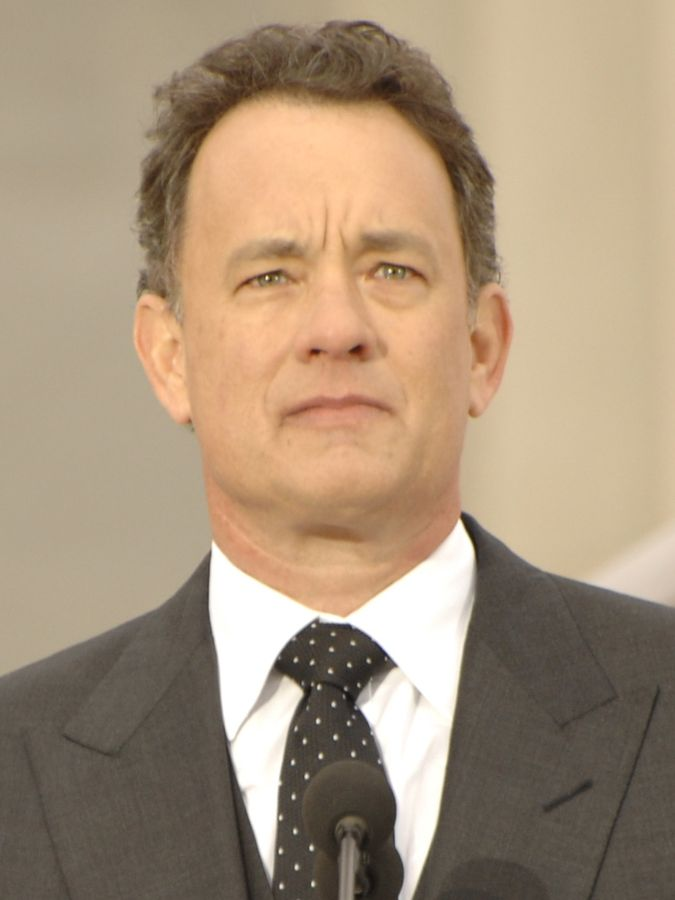
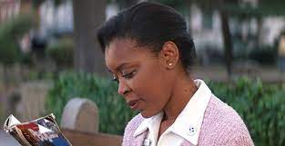
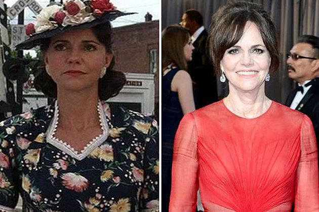
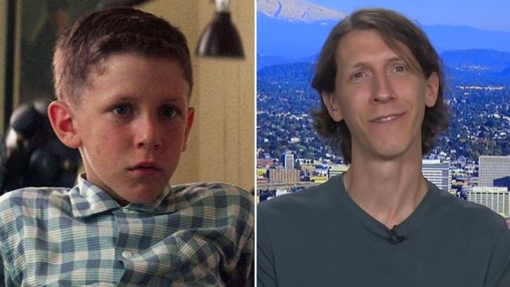
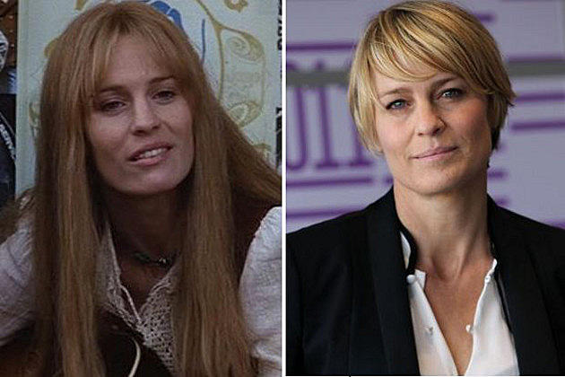
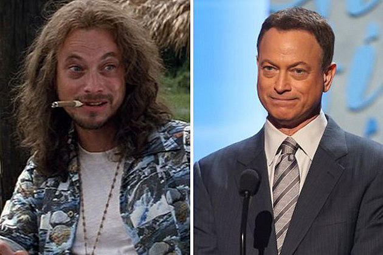
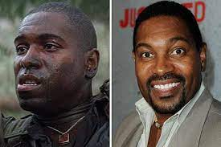

Known actors from the film |
| Name |
Image |
Information |
| Tom Hanks |

|
Tom Hanks playes Forest Gump, the main character in this movie. He has starred in many other fils since this 1994 classic. |
| Rebecca Williams |

|
As the Nurse on the bench who Forest was telling his life story too. Sally has also continued her acting carrer in "The Sisterhood Of The Travelling Pants." |
| Sally Field |

|
Playing forest's mom in the film, Sally has played many other roles and has most recently played "aunt May" in "The Amazing Spider-Man". |
| Michael Connor Humphreys |

|
As youn Forest in the movie, Michael did not persue an acting career right away and enlisted in the US military from 2005-2010. After that he returned to the big screen in "Pathfinders: In the Company of Strangers." |
| Robin Wright |

|
Robin Wright, aka Jenny, was forest's childhood love. She is now also known for her role in House of Cards on netflix and her lead in "The Proincess Bride". |
| Gary Sinise |

|
Lieutenant Dan was one of forest's friends who lost his legs in the war. He is now playing a character in CSI: New York and advocates for disabled veterans. |
| Mykelti Williamson |

|
Playing Bubba Blue in the film, as one of Forest's friends from the war and business partner in Bubba-Gump Shrimp. Mykelti has since known for his role in "Justified". |